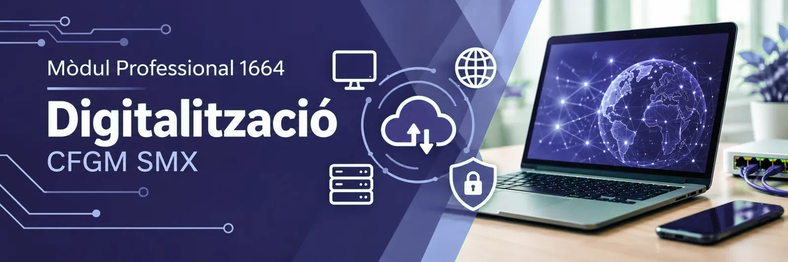

Digitalització aplicada als sectors productius
Descobriràs com la digitalització transforma les empreses: de la fàbrica clàssica a la indústria 4.0, del servidor local al núvol i de l'economia lineal a la circular. Coneixeràs les tecnologies que ho fan possible (IoT, IA, big data, 5G, ciberseguretat…) i acabaràs dissenyant el pla de transformació digital d'una empresa del sector.
- 33hores al centre
- 5resultats d'aprenentatge
- 5temes (el 5 és un projecte)
Hola, sóc en Bit! Et faré companyia pel llibre. Quan vegis una caixa de punts, para i pensa-hi abans de mirar la solució.
Els temes del mòdul
Tema 1. Economia lineal i economia circular
RA1 · 6 h · disponibleEtapes dels dos models, impacte ambiental, reciclatge, casos reals i ODS.
Tema 2. La 4a Revolució Industrial
RA2 · 8 h · disponibleRevolucions industrials, sistemes ciberfísics, automatització, IoT, PLC i SCADA, realitat virtual i perspectiva de gènere.